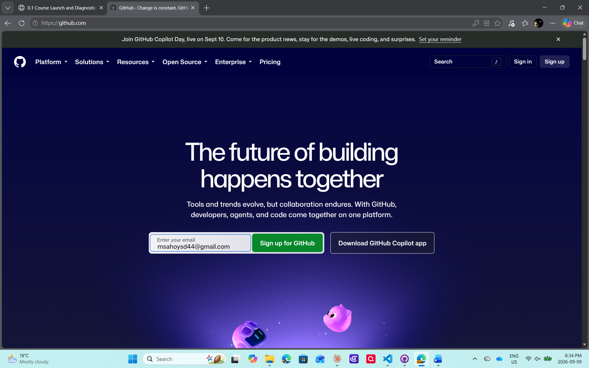
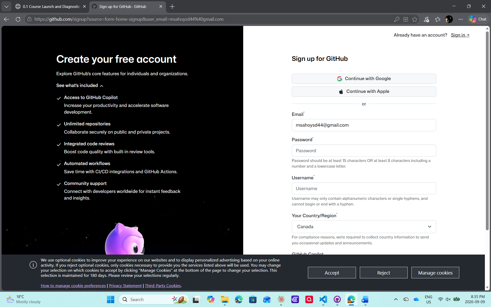
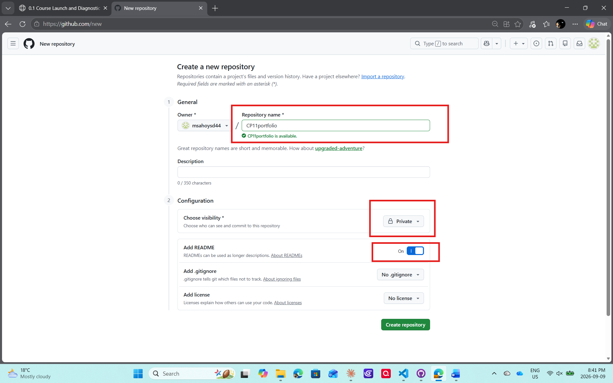
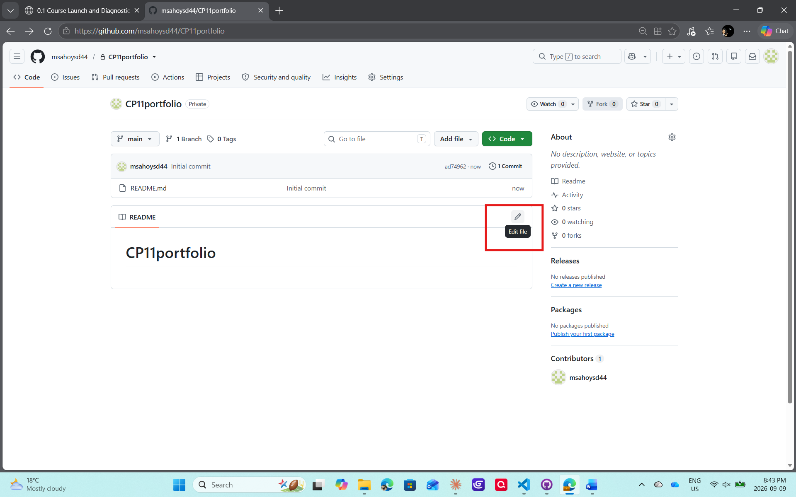
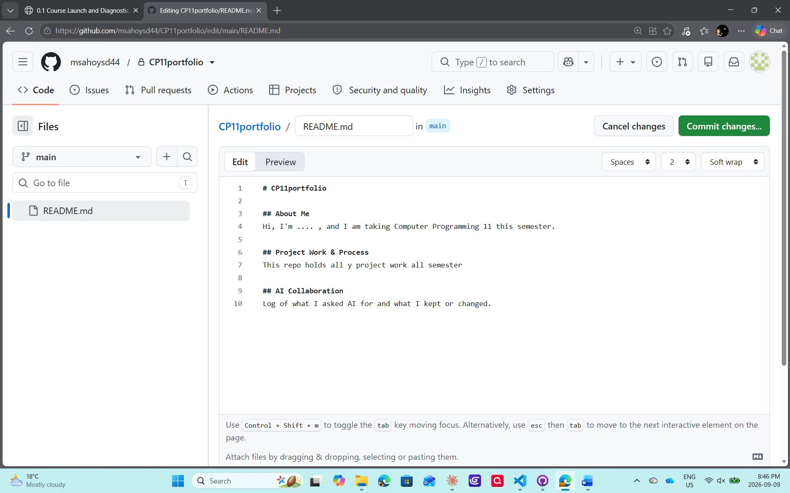
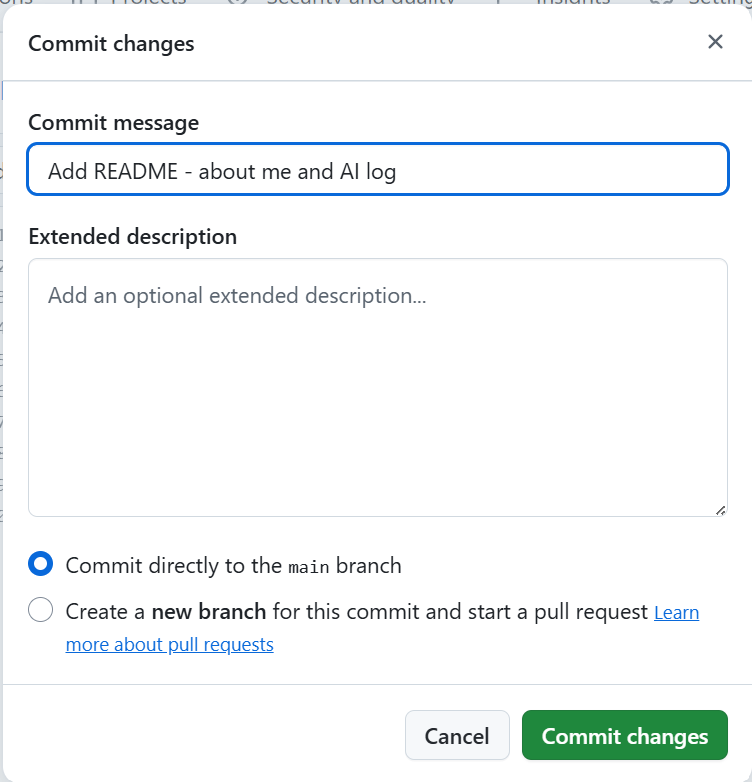
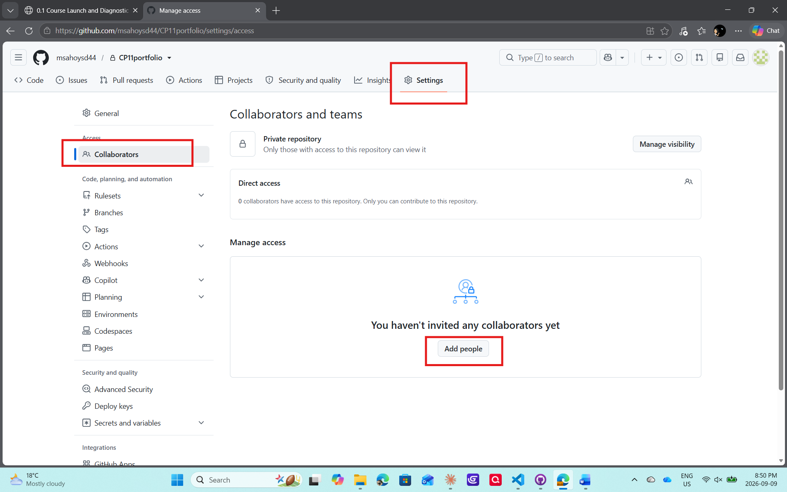
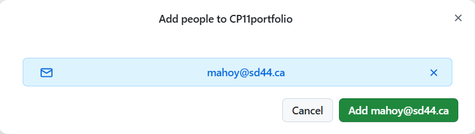

GitHub Setup
Today you're doing two things: creating a professional coding identity on GitHub, and setting up the repository (repo) that will hold your project work for the rest of the semester. Go at your own pace — if you already know this, help a neighbour once you're done. If a step doesn't make sense, put a hand up.
Before You Start: What You're Actually Building
- GitHub is where developers store and share their code online. Your account there is your professional coding identity.
- A repository ("repo" for short) is like a project folder — except it remembers every version of every file inside it. Every change you save is called a commit, so over the semester you (and I) can see exactly how your work grew, one commit at a time.
- Today you'll create one repo that holds all of your work this semester — think of it as your project's home base.
Part 1 — Create Your GitHub Account
Pick your handle first — name-based (like msmith) or a clean pseudonym. Real name not required.
Step 1: Go to github.com and sign up
Head to github.com. Type an email you already have (school, personal, or otherwise — no need to make a new one) into the box on the homepage, and click Sign up for GitHub.

Step 2: Fill in your account details
On the sign-up page, confirm your email, set a password (GitHub wants at least 15 characters, or 8 characters with a number and a lowercase letter), pick your username — this is your handle — and choose your country.

GitHub may ask you to verify your email with a code afterward — if it does, just check your inbox and enter it. Don't worry if it skips straight to your account instead.
Part 2 — Set Up Your Portfolio Repository
Step 3: Create your repository
Go to github.com/new.
- Repository name:
CP11portfolioif you're taking CP11 this semester, orCP12portfolioif you're taking CP12 (use exactly this format — it makes it easy for me to find everyone's) - Description: leave it blank, or add a line about yourself if you want
- Visibility: Private
- Add a README file: turn this on
- Add .gitignore and Add license: leave both as "None" — you won't need these
Click Create repository.

What's a README, and what's Markdown?
Every repo can have a README.md file — it's the first thing anyone sees when they open your repo, like the cover page of your portfolio. It explains what the repo is and what's in it.
The .md means it's written in Markdown — a simple way to format text using symbols instead of buttons:
#makes a big heading,##makes a smaller one. They look like hashtags, but in Markdown they mean "heading," not "hashtag."- Everything else is just plain text.
Step 4: Open your README to edit it
When your repo is created, GitHub automatically makes a plain README with just your repo's name on it. Click the pencil icon next to the README to start editing it.

Step 5: Write your README
Replace the contents with something like this (the heading at the top will already match your repo name — CP11portfolio or CP12portfolio):
# CP11portfolio
## About Me
Hi, I'm ... , and I'm taking Computer Programming 11/12 this semester.
## Project Work & Process
This repo holds all my project work for the semester.
## AI Collaboration
Log of what I asked AI for and what I kept or changed.
Step 6: Commit your changes
Scroll up and click Commit changes.... A window pops up — the commit message is already filled in for you (or write your own), leave "Commit directly to the main branch" selected, and click Commit changes.
That's your first commit!

Part 3 — Share Your Repo With Me
Your repo is private, which means only you can see it — until you add someone else. So I'll need you to add me as a collaborator.
Step 7: Go to your repo's Collaborators settings
In your repo, click Settings, then Collaborators in the sidebar, then Add people.

Step 8: Add me
Type in mahoy@sd44.ca, and click Add. I'll get an invite by email and accept it — that's how I'll be able to see your work all semester.

What's Next
Next class (0.3), you'll connect this portfolio to VS Code and get comfortable with the local git workflow — committing and syncing changes right from your editor.